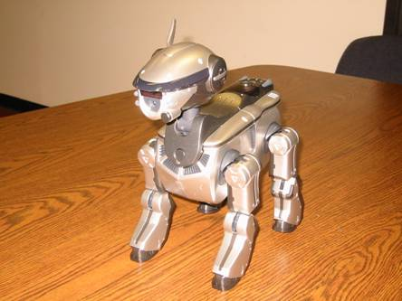

Introduction
So, once upon a time, as being told, the AIBO, the name of the device
pictured above, was left untouched for more then two dozen months. Nobody in
the CVRL knows how to use it, or even turn it on for that matter. Looking at
the past five offerings of ECE 452, none of the final projects was based on the
AIBO. So I believed that it is about time to put this dust-covered AIBO back
alive to glory once again.
So what is AIBO anyway?
AIBO
stands for Artificial
Intelligence roBOt,
which also homonymous with the phase "companion" (相棒 “aiboh”) in
Japanese. This one of several types of robotic pets designed and manufactured
by Sony; there have been several different models since their introduction on
May 11, 1999. AIBO was discontinued in 2006, as an effort to restructure and
restore the profitability of the company.
The
one we are dealing with here is the model ERS-220, which
first available on sale in 2002.
Some
of its great features include software giving it a 75-word vocabulary and
advanced photo taking options. Its futuristic silver body is constructed with
16 degrees of freedom allowing smooth body movement. The various sensors that
the AIBO has are infrared distance sensors, acceleration sensors, switches
(head, face, legs, paws, tail), vibration sensors, temperature sensors. As
being able to walk, "see" its environment via camera, and recognize
spoken commands, the AIBO robotic pets are considered to be autonomous
robots, since they are able to learn and mature based on external stimuli
from their owner or environment, or from other AIBOs.
What have we done here?
These
are the stuff we have finished so far:
·
Voice command
·
Dance with music
These
are the stuff that we attempted to do but failed:
·
Remote control AIBO with a PlayStation Portable
·
Taking pictures and sending it remotely to a master
PC at every pre-defined time interval
Click
on the links above to navigate each component of the project. Make sure you read the section about the programmable memory
stick first.